No question receives as inadequate an answer as “how was it?” to a slow-thinking, blissed-out, directly-post-acid
friend in the early evening hours after their trip. Their meandering memories are unordered, epiphanies
inarticulate, warmth radiated out and smoked up like the incense they toppled over stumbling up to stretch.
In their baked and fuzzy haze, thoughts become tantric mantras: abstract, unarguable phrases chanted until they
achieve natural truth. If printed on a natural fiber tee tumble-wash-eroded to a roughsoft nap, or a bumper
sticker faded dry by road trips through All-American deserts (Vermont winter, Texas tumbleweed, Joshua Tree
summer, Brooklyn asphalt), those mantras would be rendered in Hobo.
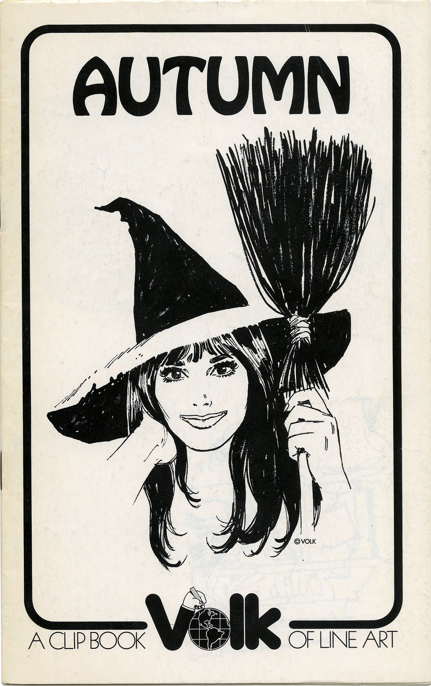
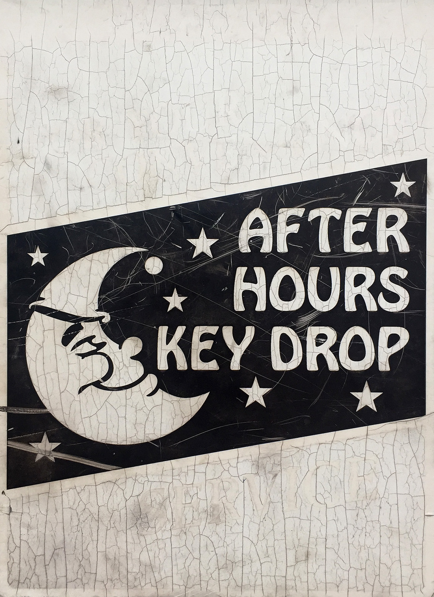
Hobo has, above all else, a flared flair. She is natural, organic, softly undulating. You can, if you go slow
enough to fit in the spliffs and deeps conversations and naps, hike in bell bottom Lees. Hobo does. It’s died in
her wool, after all. Hobo’s parents, those wonderful old hippies, will leave her a cash-poor inheritance comprised
largely of one-of-a-kind hand-me-downs in corduroy, canvas, denim and leather.
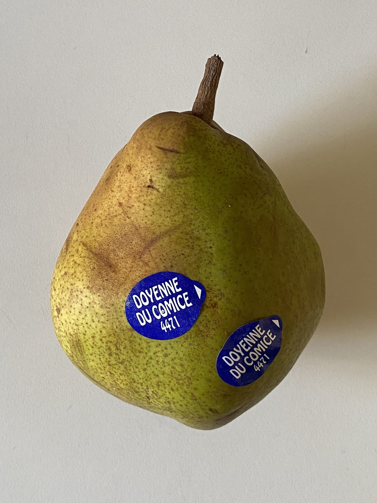
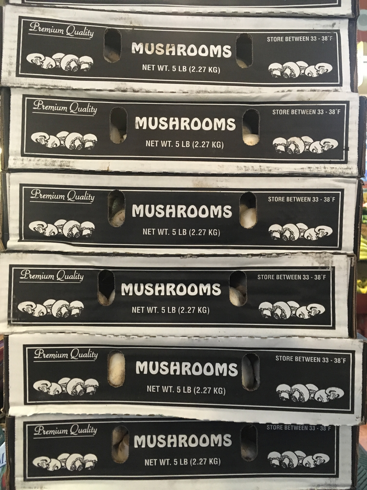
Nature girlie
Hobo always seems to be hanging around some new group. Maybe its because she’s easy going, though she worries it
because of her copious hallucinogen intake. She makes fast friends waiting at the bar, smoking a cigarette
outside, and in line at the club. With these new friends her soft smile rarely parts to push words through, merely
pursing and widening in response to the conversation around her.
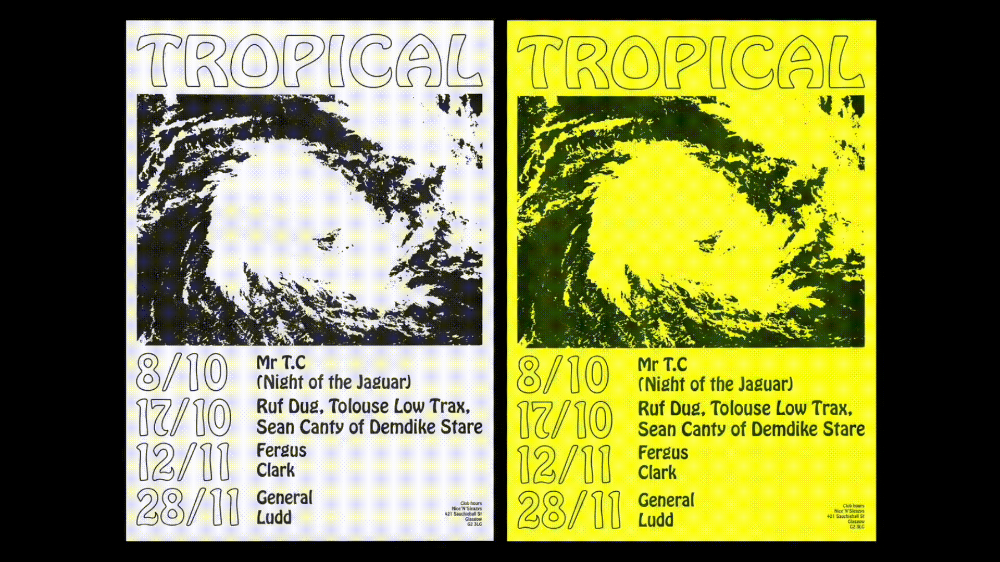
Hobo enjoys drugs, she half-heartedly self-assures while trudging through dopamine valleys, because receiving
feeling is the truest form of honesty. The bitter cynicism lurking behind Hobo's fears is that she's merely a ripe
target for projection. After all, isn’t her soft, smooth brain the perfect palette for the soaring emotional arcs
of a trip? And her sincere and silent tight-lipped smile, allegedly beautiful - isn’t that just a safe haven for
the hurt souls who seek her audience?
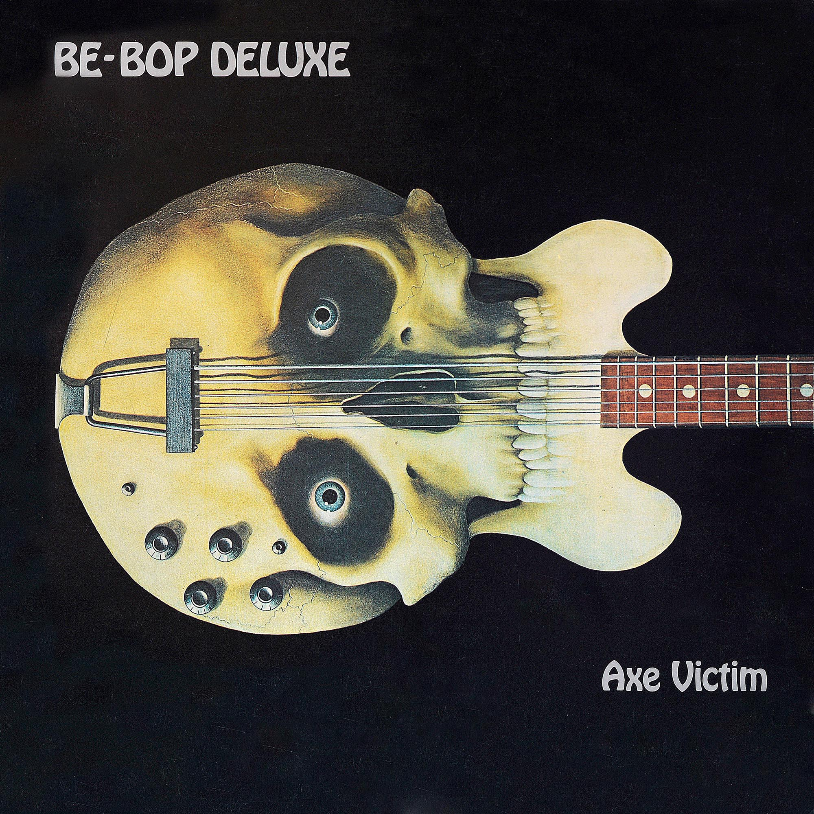
Scenes from Ego Death Valley
Jeez, that was a long trip. Hobo pauses, thumbing through her last 6 hours - happy, sad, radiant, shivering, lost,
found, stretched, and now contently - truly contently - wrung out.
“How was it?” you ask again.
“Ohhhh, you knoooow,” Hobo replies, her arcing tone harmonizing with the past day’s still-reverberating feelings.
“How are you?” she deflects.
Shatter’s rib cage pokes through their pale skin. Any fat Shatter once had was burned long ago from sweaty nights
dancing and muscles shivering and thoughts spinning so fast that Shatter forgot to eat. Shatter is completely
burnt, gnashing and grinding until the friction rips them into ash and smoke and acrid fumes.
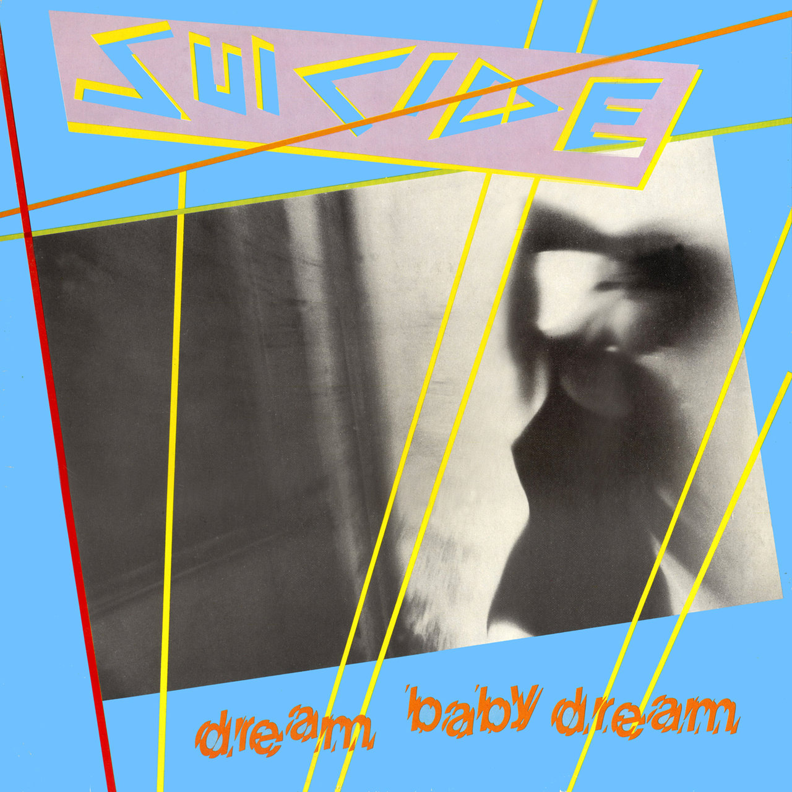
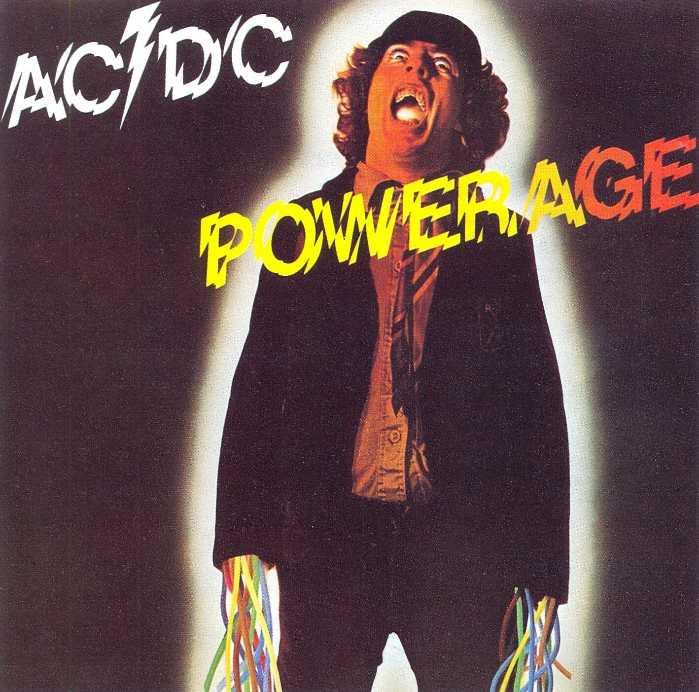
Before falling face-first onto sharp rails of cocaine that Shattered them into jagged shards, they were a clean,
orderly, crisp Helvetica. Looking at their pieces, angled forward and stuttering back, Shatter’s particularly
handy and hopeful friends imagine they can put Shatter back together. Maybe they can. Never perfect, never
seamless, never like they were - that Eden is gone - but together in some comfortable, human sobriety.
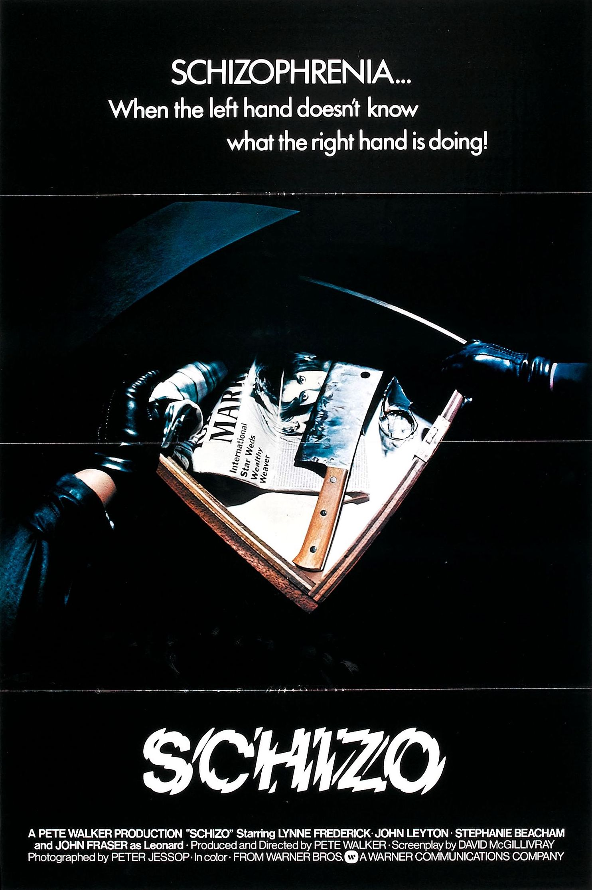
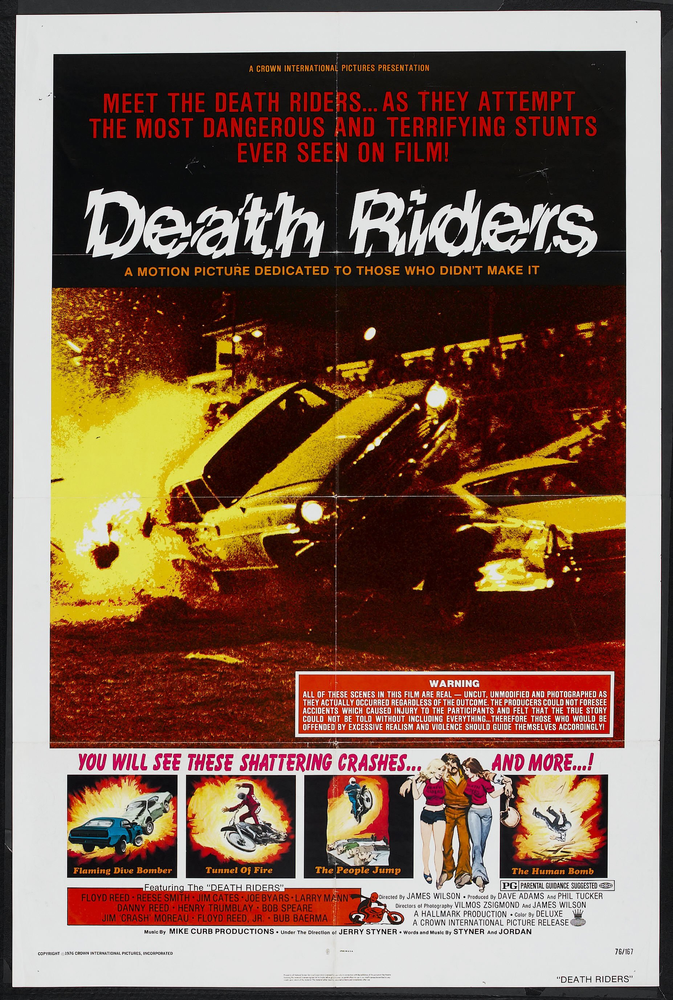
Some who have already tried to help, though, aren’t so sure. “The breaks might be too clean and complete,” they
worry in hushed tones, “and I’m not sure there’s a surface for the glue to hold on to and bring Shatter back
together.” If they’re right, if Shatter’s anxious feedback loop has become debilitatingly defeaning, the only way
to quiet Shatter might be by unplugging them altogether. Full lobotomy.
For now, Shatter will remain suspended in the cracked acrylic amber of their panicked mania. A breaking point -
one we try not talk about anymore - brought about their Shattering. One day, God willing, another will bring about
their Recovery.
Weed
(Multiple fonts)
The modern cannabis consumer/conneseiour (MCC/C) knows there are three key data points (3-KDPs) to evaluate when
selecting a giggle grass to mellow their harsh: delta-9-tetrahydrocannabinol (Δ-9-THC), CBD (CBD), and, crucially,
brand identity.
Thanks to its wide popularity, weed’s moderate categorical diversity gives consumers a feeling of control free
from the burden of creation. Run your eyes at the selection on the shelf: whispy scripts centered over washed out
pastels, matte black blocks drilled into glossy precious metal, merry old tattoos inked on tan paper.
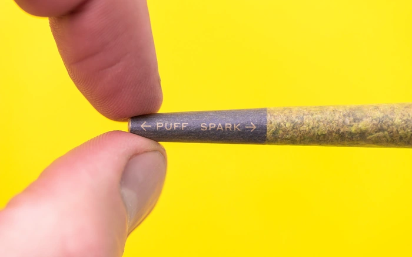
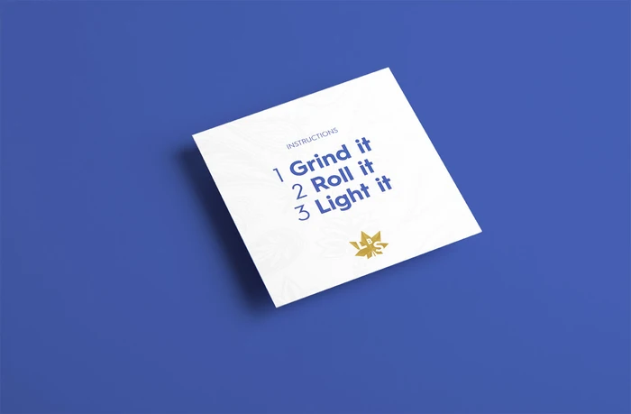
Weed is instructional
Why the schisms in window dressing? Boomers bought things. Millennials bought experiences. Now, young folks
purchase states of being - ideally visible ones. It’s natural for consumers to come to age, after all. Weed has.
Marijuana’s polyamorous relationship with private equity and Pentagram design gas led it to embrace its
professional Brand Identity: relaxed, coherent, attractive, and pristine.
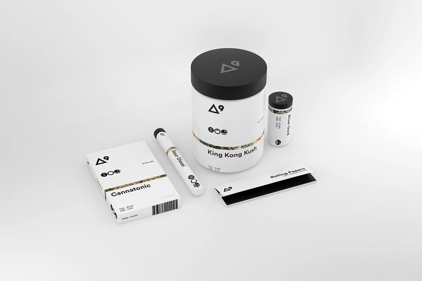
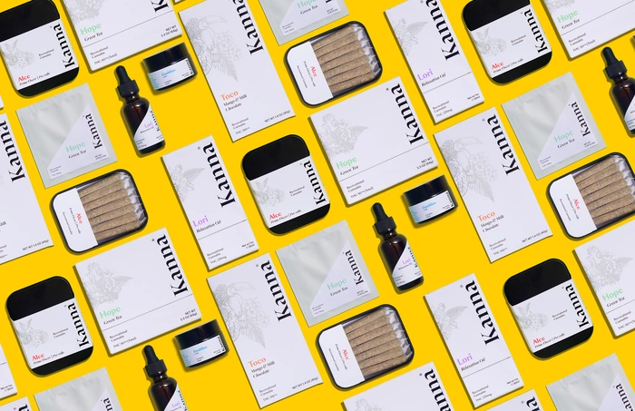
Weed is medicinal
If only those promises came true. Like drinking with your parents, smoking is fun in theory and hilarious in
stories. But in reality, few are cool enough to do it without feeling a touch off. Both happened most in college,
at high school grad parties and Thanksgivings back home and second cousins’ weddings. They were narcotics to dull
the lonely, low-grade pain that started acting up after flying (falling?) out of the nest.
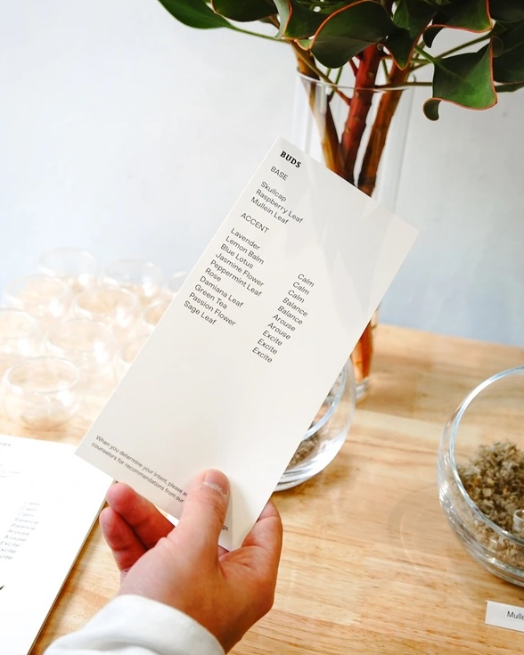
Tasting menu and an edible's packaging
There is no singular font for weed because weed has full entered the public market: a buyer’s market (confused,
inebriated, unsatisfied buyers), and thus a marketer’s market. It is defined by the surface-level diversity
pulling it in every direction and, ultimately, nowhere.
As always, special thanks to fontsinuse. You can find most
of these fonts and images - and many more - listed there.
 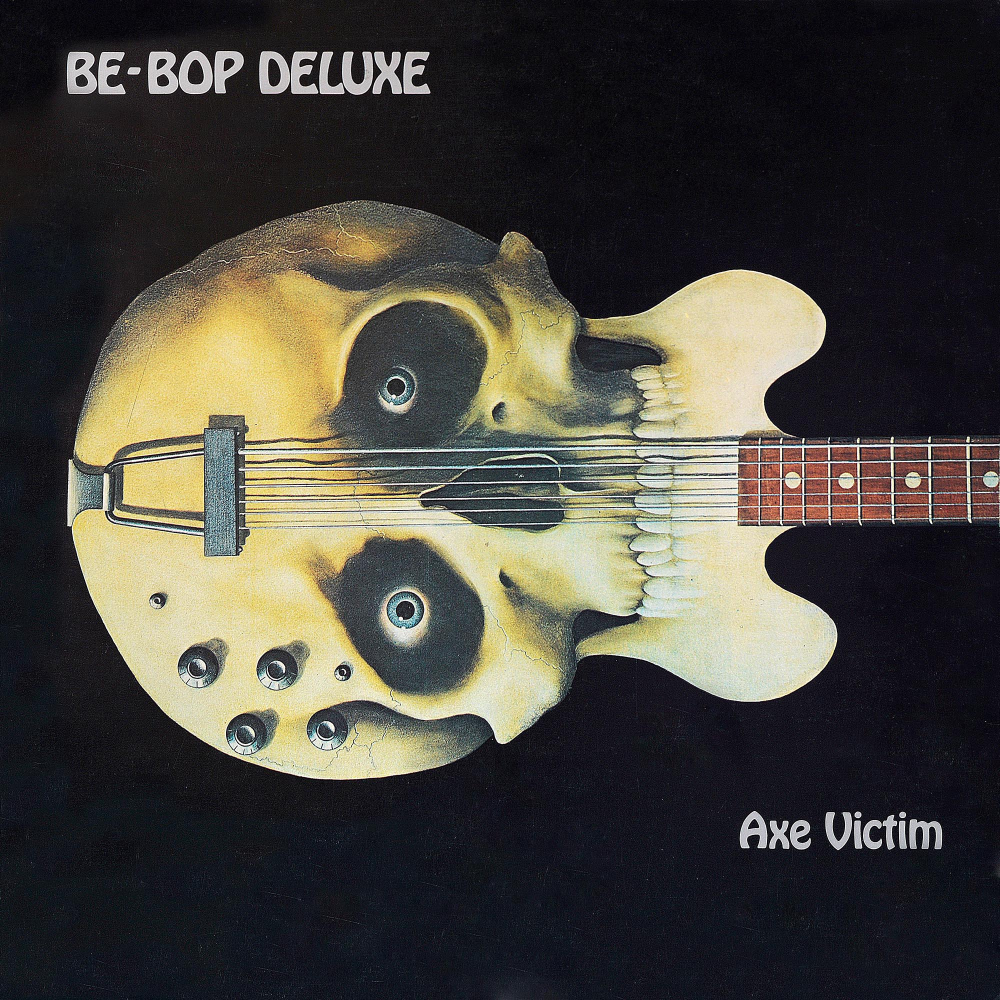
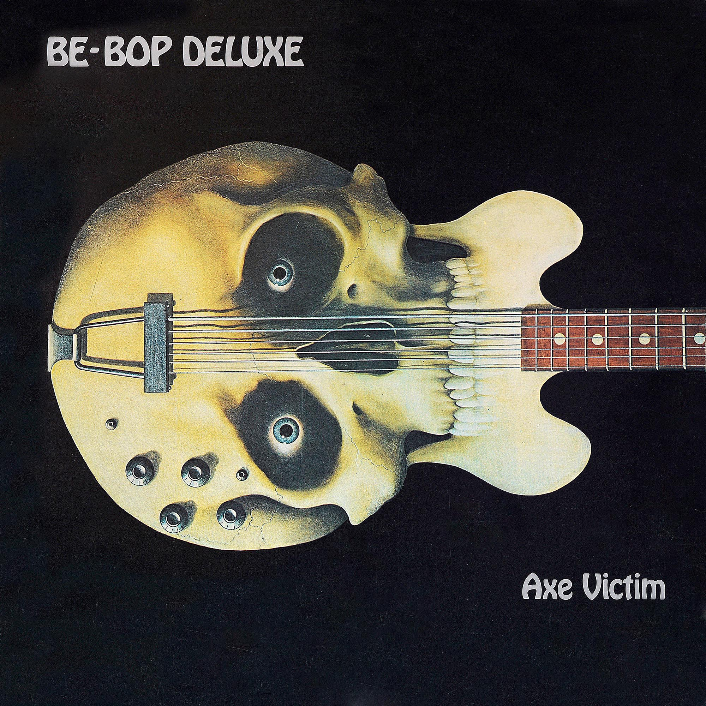